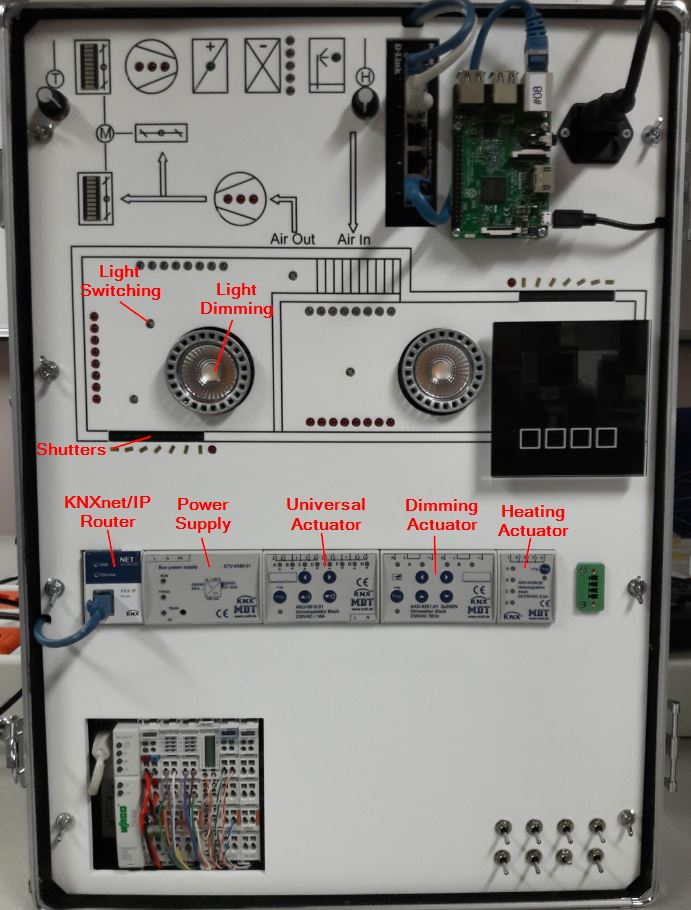
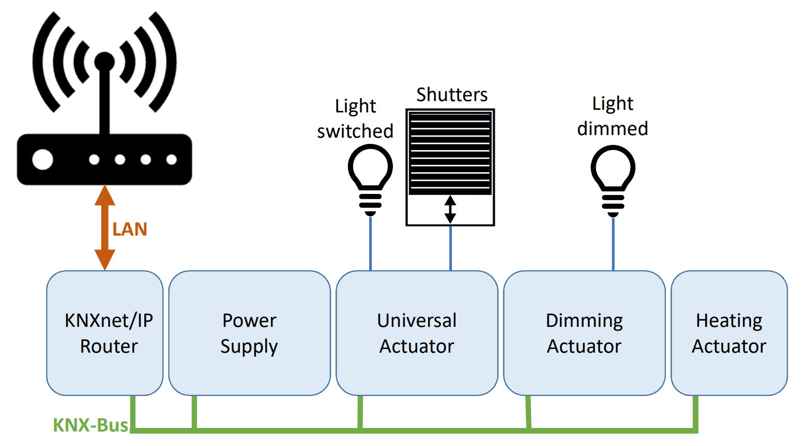
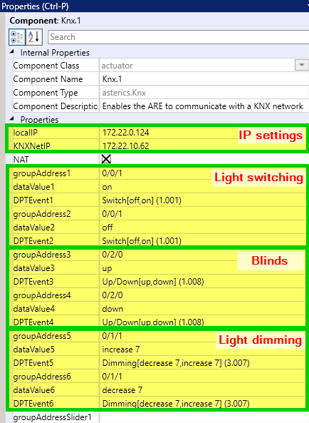

Objective
This example contains the most important functions, like
- Switching (On/Off)
- Blinds (Up/Down)
- Dimming (relative)
Description
This demo is based on the smart home kit hardware of the UAS Technikum Wien. The purpose of this Smart Home Kit is to simulate a Smart Home with different devices and technologies. There are two rooms in the demo case. Heating, cooling, lighting and shading are controlled by KNX components. The air ventilation system on the top is controlled by a Wago PLC. On the right upper side a Raspberry Pi 3 is mounted.

The KNX system is connected to the local network via LAN. The whole setup is illustrated in the following image:
Requirements
For this demo you need
- AsTeRICS 3.0 installed and ARE running
- OS: Windows, Linux (incl. RPi), Mac OSX
- A little knowledge on KNX
- A KNX system and a list of the group addresses
Start Demo
To run this demonstration, the IP address of the KNX/IP Router and the group addresses have to be adapted below:More information
The screenshots below show the properties of the KNX plugin which are actually used to configure the system. For more details about their meaning, see the KNX plugin help.
Additional Material
Major Plugins
Edit Model
Open in WebACSSource Repository
Fork and modify this repository.